RealDistrict · Brand identity document · Version 1
RealDistrict
Brand identity
The Version One identity as it exists in the live site and repository: mark, wordmark, colour, type, voice, imagery, and the surfaces that carry one operator’s property shopfront into the world.
Version 1Issued 22 September 2026Prepared by Jewell Projects
This document consolidates an identity that already exists. It does not invent one. Every item is traceable to a file in the live build, or marked as open so the gap is visible.
ConfirmedEstablished in the live site or repository. Use as documented.
ProposedDrawn from how the site behaves, shown for sign-off. Not a standard until agreed.
To be confirmedNot yet established. Listed in the open register.
01 Brand overview
One team, one place to talk
RealDistrict is a marketplace for residential and commercial property for sale, run by one team. People browse and shortlist on the site, ask about a property in one conversation that stays with that property, and arrange to see it in the same place. It does not compete on inventory or reach; it competes on being straight with people about what is real, what is known and what happens next.
Purpose
Find your next place.
The promise on the homepage, the footer and the tab. Confirmed
Mission
Discover a home, understand the essentials and get a useful response from the person managing it.
docs/01, the product brief. Confirmed
Vision
No vision statement is published on the site or recorded in the repository.
Open item B-01. To be confirmed
Three things the site already promises
These are not values on a poster. They are the product invariants the code enforces (AGENTS.md), written the way the site says them on How it works.
One conversation per property
However many times a customer writes about a property, it is one thread, and the team answers in it. Private team notes are separate records and never reach the customer.
A request is not a booking
An inspection is requested by the customer and confirmed by the team, who check the slot and the property at that moment. The state change is visible to the customer.
Say what is real
A fictional listing says so on its card and its page. A real property’s photographs are labelled as supplied by the property. A price, room count or area that is not known is stated as to be confirmed, never invented.
Personality
Clear
Warm
Concise
Plain
Restrained
Straight
docs/03: “Clear, warm and concise.” Confirmed
Never
A luxury brand, a portal, or a lifestyle magazine. No superlatives, no exaggerated promises, no generic luxury language, no invented facts. The guardrails in docs/23 say it in one line: no luxury language. Confirmed
Audience. Buyers and investors comparing homes and commercial property, saving options, asking questions and arranging viewings; and the team that lists, answers and confirms. Renters are not an audience: renting was removed (docs/19). The first release is one organisation’s shopfront, not a multi-agent portal (D004).
02 Brand story
The shopfront, not the portal
Property portals are built to hold every listing from every agent; the presentation is the agent’s and the conversation happens somewhere else. RealDistrict is one operator’s shopfront. The presentation is careful because there is one team behind it, and the conversation stays on the site because that team is the one who answers.
Find
Residential and commercial, open to everyone without an account. Filters live in the address bar so a search can be shared. Saving needs an account, so a shortlist follows the person.
Ask
Every listing has an enquiry form. Sending it opens the one conversation for that property. Replies land in the customer’s account; nothing is emailed.
Visit
From the listing or the conversation, choose one of the team’s times or suggest another. The team confirms it, and the record changes from requested to confirmed.
What is real today
One real property is on the site: GrandBlue Resort & Beachclub, Mae Phim Beach, Thailand, shown in photographs supplied by the property with its price, room count and areas stated as to be confirmed (docs/18). Every other listing is a labelled fictional concept with generated imagery. The plan on a page (docs/21) sets the north star as one real property sold through the site. Confirmed
Both halves are load-bearing. The brand is only credible if the fictional listings are labelled as plainly as the real one is presented. Publishing the careful presentation without the labels would turn a shopfront into a brochure.
03 Logo system
Four blocks, the right column rounded
The mark is abstract, not a letter: two olive squares on the left, a pale quarter-round top right, an olive quarter-round bottom right with a pale tail tucked under its curve. The gaps between the blocks are open, so the ground shows through and the mark needs no background of its own. Traced from artwork Clent supplied (docs/44, D039).
On paper
On deep olive
Tile, for icons
Construction
On a 100-unit square: blocks 47.1 wide with a 5.8 gap; the left column splits at 49.3 and 55.1, the right at 43.5 and 49.3, so the right column sits a little higher. Top-right radius 43.5, bottom-right corner radius 47.1, tail 10.9 wide following the curve at a 5.8 offset. Confirmed
Colour
On paper, olive and accent. On deep olive, white and a mid green (#8fa899). On a tile, paper and mid green on deep olive. Two greens, never a third colour, never a gradient. Confirmed
Source
design/realdistrict-mark.svg, published here as the mark and the tile. A vector, so it prints. It is a trace of a raster; if a vector original exists it should replace the source. To be confirmed
Lock-ups
RealDistrictHeader: mark and name
Footer: the mark alone
RealDistrictSign-off: the name at the measure
Three settings are live: the header lock-up at 36px with the mark at 0.84 of the name and a 0.3em gap; the footer opens on the mark alone at 44px; the sign-off sets the name across the page measure at 97.5% fill (docs/46, docs/53). Confirmed
Clear space and minimum size
Clear space: at least a quarter of the mark’s width on every side. Stated in docs/47; never drawn as a diagram and never signed off as a standard. Proposed
Minimum size: 16px. Measured: the favicon reads at 16px on light and dark tab bars (docs/44). Because the mark is abstract there is no letter to lose; the floor is where the tail disappears. Confirmed
Incorrect usage
Do not rotate or mirror it.
Do not outline it or add a stroke.
Do not separate or rearrange the four blocks.
Do not recolour it outside the two greens, or give it a gradient or shadow.
Do not set it in one colour on paper: the pale block is the mark’s second colour, not a tint to drop.
Do not place it on a photograph without a calm area behind it.
No misuse rules were recorded before this document; the six above are the failure modes a two-tone abstract mark is most exposed to. Proposed
Monogram and symbol
There is none, and none is proposed. The mark is already the smallest form: it is the favicon, the tile and the footer sign. A lettermark was tried and rejected in the rounds before the mark was chosen (docs/42), because R-and-D forms read as B or P at small sizes. Confirmed
The mark in the world
Digital only. No sign, card, letterhead or packaging carries the mark; no physical application exists to audit. To be confirmed
04 Colour palette
Ivory and olive
Nine tokens, all in public/experience.css under :root. A warm near-white ground, a deep green for the mark and controls, a deeper green for the footer, two pale tints, a hairline, a secondary text colour and one warm accent for focus and warnings. Contrast figures are WCAG 2 ratios computed for the exact pairs the site uses; the site does not claim conformance from them (docs/03).
Paper#fcfcfaPage ground
Ink#202924Text · 14.6:1 on paper
Olive#244d3eMark, buttons, accents · 9.3:1 on paper · white on it 9.5:1
Deep#173c2eFooter ground · white on it 12.2:1
Pale#edf1ebTinted panels · olive on it 8.3:1
Accent#dce7dcThe mark’s second green · ink on it 11.8:1
Line#dde2dcRules and borders
Muted#657068Secondary text · 5.0:1 on paper
Clay#91432fFocus rings and warnings · 6.7:1 on paper
Balance. Paper carries almost every layout. Olive is for the mark, primary buttons and the eyebrow labels; deep olive appears once per page, as the footer ground, and never as a theme. Pale and accent are for tinted bands and cards, never for large fields. Clay is an accent for focus rings and warnings, not decoration, and colour is never the only signal of a property’s status: every status also has a word. Confirmed
No dark theme
The footer’s deep ground with white type is the one inversion. There is no dark mode and none is planned. Confirmed
Print and Pantone
No print equivalents are specified. Needed before any printed application. To be confirmed
Two palettes in the record. docs/03 still lists the original proposal (ivory #F7F4EC, olive #485A42, clay #A6533E); the tokens above are what the site has shipped since the editorial redesign. The live tokens are the standard; the proposal is history. Reconciling docs/03 is open item B-08. To be confirmed
05 Typography
One sans, one display serif
The interface sans is the system’s own: Segoe UI Variable, then Segoe UI, Arial and the platform sans. The display serif is EB Garamond, self-hosted under the SIL Open Font Licence as Porli Serif, latin subset only (docs/30). No third-party font service is ever loaded; the Content Security Policy forbids it.
Aa
Interface, body copy, forms, buttons, the wordmark
Aa
Display headings and section titles, 26px and up
Display
Find a place, ask about it, go and see it.
Heading
Talk to the people who manage it.
Subheading
Replies land in your account
Body
Every listing has an enquiry form. What you write goes to the team member who manages that property, and it opens a conversation you can find any time under your account.
Eyebrow
Common questions
Rule of thumb. Garamond for what a reader is meant to weigh; the sans for what they are meant to do. Weight and spacing carry the hierarchy; no italics for emphasis, no exaggerated tracking. Confirmed
The wordmark
The name is set in the sans, “Real” at text weight and “District” at 750, tracked −2% (D040). The artwork’s geometric face was not adopted: one typeface and no third-party fonts are guardrails, so licensing it would be a separate decision. To be confirmed
Fallbacks
On a platform without Segoe UI Variable the sans falls to Arial or the system face and the wordmark’s 750 snaps to bold; the relationship holds, the proportions shift a little. The serif has a local(Georgia) fallback while the file loads. Confirmed
06 Voice & tone
Plain, warm, and honest about what is real
British English. Short sentences that say what happens. The site tells people what it does and does not do in the same tone, and a limitation is stated in the interface rather than hidden: “No email is sent.”, “This is a request.”
Reference lines
Live on the site. Use them verbatim; they are the calibration set for anything new. Confirmed
Find your next place.Homepage · headline
Residential and commercial property, with one team to talk to.Homepage · intro
Ask about this place.Listing · enquiry form
Take a closer look.Listing · inspection request
This is a request. The team will confirm the time in your account.Inspection form · the line that does the most work
Your message will be saved in your account. No email is sent.Enquiry form
You’re all caught up.Workspace · empty queue
This door doesn’t open here.Not found
Do
State what happens and when: “The team confirms it, and you see the confirmation under Inspections.”
Name the limitation in the sentence: “No email is sent.”
Say what is fictional, on the thing itself.
Use the first person plural for the team: “we write it, we answer for it and we show it.”
Prefer the plain word: home, place, team, price to be confirmed.
Don’t
No luxury language: no “exclusive”, “prestigious”, “bespoke”, “world-class”.
No invented facts: no price, room count or area that the property has not supplied.
No testimonials, response-time promises or inventory totals that nothing backs (content/site-copy.md).
No urgency or scarcity.
No American spelling.
Surface
Register
Example
Homepage and editorial
Serif headline, one plain sentence beneath it.
“Residential and commercial property, with one team to talk to.”
Listing
Facts first, labelled; the enquiry and the visit as two calm actions.
“Photographs supplied by the property. Price to be confirmed.”
Forms and account
Procedural. Say what a field is for and what happens next.
“Changing it signs out your other devices.”
Workspace
Quiet and operational. Counts are named precisely (docs/08).
“Waiting for a conversation.”
Empty and error states
Warm, never blaming, always with a way on.
“A little room for possibilities. Tap the heart on a home to keep it here.”
07 Photography & art direction
Natural light, believable scale
Natural light, straight architectural verticals, tactile materials, restrained grading and varied property types (docs/03). No sunsets on every card, no glossy renders, no generic drone shots. A generated image never stands in for a real listed property.
Two kinds of image, told apart
Generated concept studies
Architectural studies made through Higgsfield for the fictional listings, each recorded in design/asset-register.json with its prompt and generation id. Every one is labelled on its card, its page and in its alt text: “Generated concept image.” Higgsfield credits are exhausted; no new generated imagery is being made (docs/23). Confirmed
Photographs supplied by the property
GrandBlue’s six photographs, from the property’s public gallery, resized to 1536 × 1032 WebP, alt text ending “Photograph supplied by the property.” Written permission for their use is not yet on file. To be confirmed
Alt text convention
Every listing image’s alt text says what the picture shows and ends with which kind it is. The suffix is added by the server once, however many times the app starts (docs/27). Confirmed
Photography to commission
None has been commissioned. When a real listing beyond GrandBlue exists, its photographs come from the property under the same label. Openly licensed photography is used for destination or mood imagery only, never presented as a listing photograph, and always recorded in the register (docs/23); the set below is the first of it. To be confirmed
Sourced imagery: Thailand
Twelve openly licensed photographs chosen on 22 September 2026 from Wikimedia Commons for destination and mood use: the Rayong coast where GrandBlue is, Phuket Town’s shophouses for the commercial side, and Bangkok’s canal-side houses for the residential side. Each is a real place by a named photographer, resized to 1536 × 1032 WebP and recorded in design/asset-register.json with its source page and licence. They are never listing photographs: no card or property page shows one, and a caption always names the place. The credit travels with the image wherever it is used; the two share-alike photographs (Baan Ekanak, Khlong Bang Khun Si) keep the same licence on any edited version. Chosen for the art direction above: natural light, straight verticals, no sunsets, no resort staging, nobody posed. Proposed
Laem Mae Phim Beach, RayongDestination: the coast GrandBlue sits onVee Satayamas, 2026 · Wikimedia Commons · CC BY 4.0
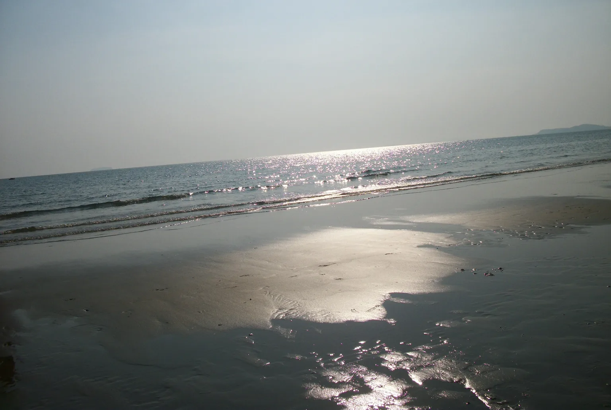
Laem Mae Phim, RayongMood: quiet water, the softest image in the setThaweesak Churasri, 2011 · Wikimedia Commons · CC BY 3.0Chakphong, Klaeng District, RayongDestination: the Rayong shorelineАндрей Бобровский, 2009 · Wikimedia Commons · CC BY 3.0Rayong ProvinceMood: a working coast, not a resortCharin ninsu, 2012 · Wikimedia Commons · CC BY 3.0
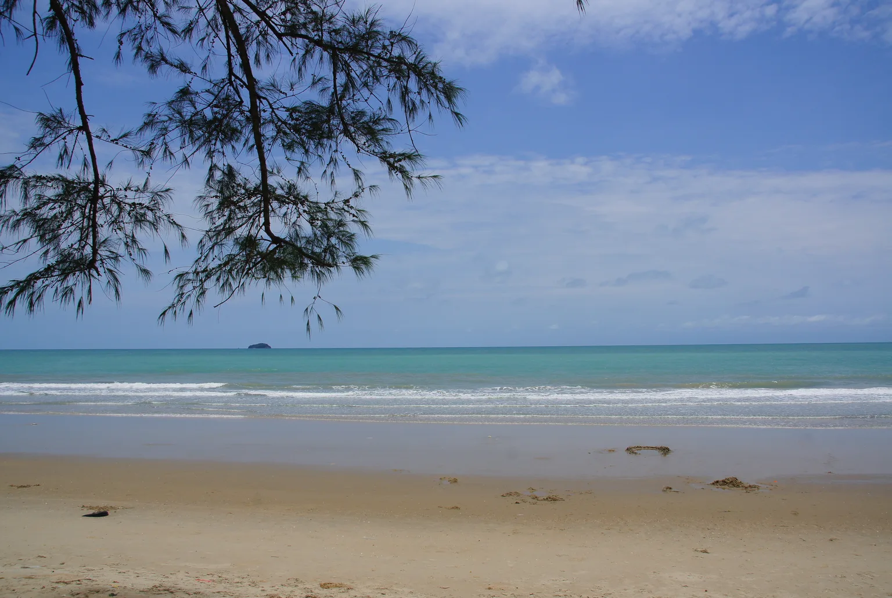
Rayong ProvinceMood: sand, foliage and water in the site paletteCharin ninsu, 2013 · Wikimedia Commons · CC BY 3.0
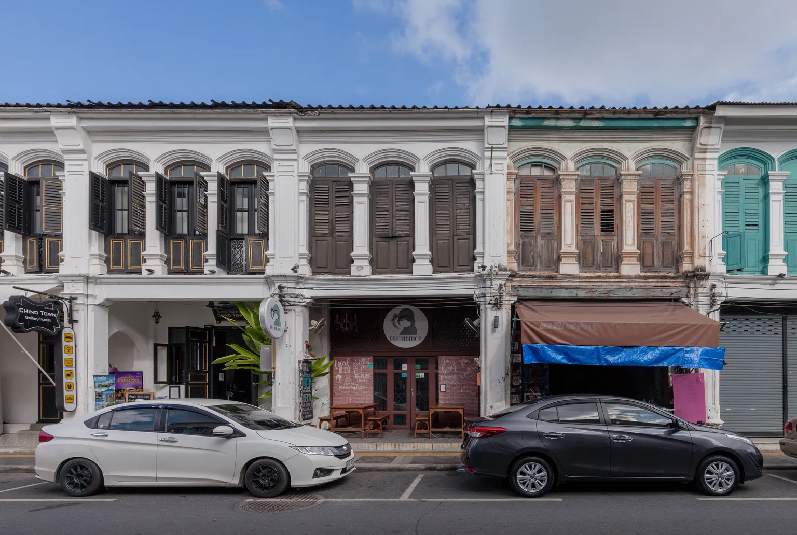
Phuket TownCommercial: shopfronts, heritage streetsSupanut Arunoprayote, 2019 · Wikimedia Commons · CC BY 4.0
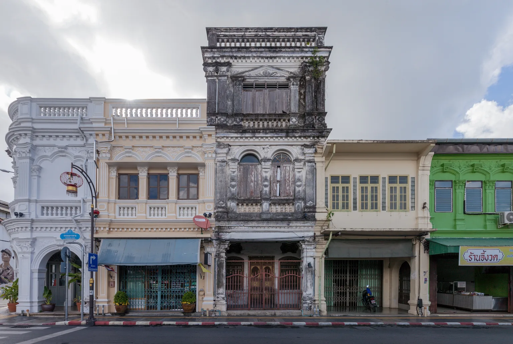
Phuket TownCommercial: shopfronts, heritage streetsSupanut Arunoprayote, 2019 · Wikimedia Commons · CC BY 4.0
How to use the set. Destination cards, the How it works opener, editorial bands and this document. Not for a listing’s gallery, a card’s cover or any surface where a person could read it as the property itself. Higgsfield credits are not needed for this set; if the site’s locale becomes Thailand (D007 is open), these are the images to start from.
Avoid. Sunsets on every card, pools and mansions, glossy CGI, generic drone imagery, luxury staging, people smiling at the camera, any generated picture presented as a real place.
08 Positioning & naming
One operator, one name
RealDistrict is standalone: not a sub-brand, not a house of brands, no parent named on the site. Its position is the shopfront (section 02): careful presentation, honest labels, one team who answers.
Item
Standard
Status
The name
RealDistrict, one word, capital R and capital D. “The RealDistrict team” for the people. Not “Real District”, not “RD”. (D033)
Confirmed
Product names
Residential, Commercial, Saved homes, Messages, Inspections, Team workspace, Team login, How it works. Plain nouns, no coined names.
Confirmed
Working name
Porli was the working name until 21 September 2026 (docs/38). It survives in the address, the repository, the package and file names, and the dated records, on purpose.
Confirmed
Address
porli.clent.workers.dev. The live address still carries the old name; a domain has not been attached.
To be confirmed
Brand availability
Nobody has checked whether RealDistrict is available as a company name, domain or trade mark (D009). Nothing on the site claims it.
To be confirmed
Trading entity
Who trades as RealDistrict is not decided (D013, docs/21).
To be confirmed
Focus
Whether the first real business is commercial or residential is not decided (D013). It gates the hero copy.
To be confirmed
09 Brand applications
The system in use
Every surface below is a screenshot of the live build, not a mock-up. They show fictional listings, labelled as such. Physical applications do not exist; the section ends with what would be needed.
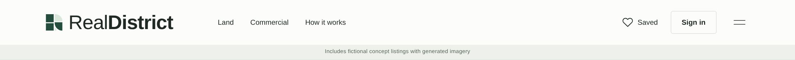
Header · mark and name at 36pxConfirmed
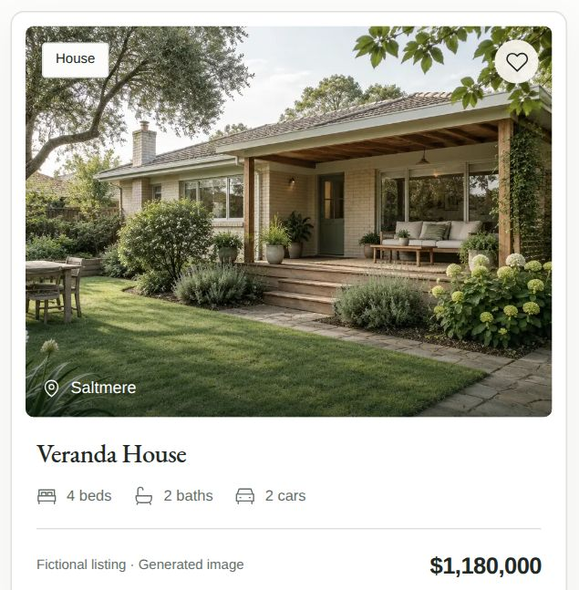
Property card · the label sits on the card itselfConfirmed
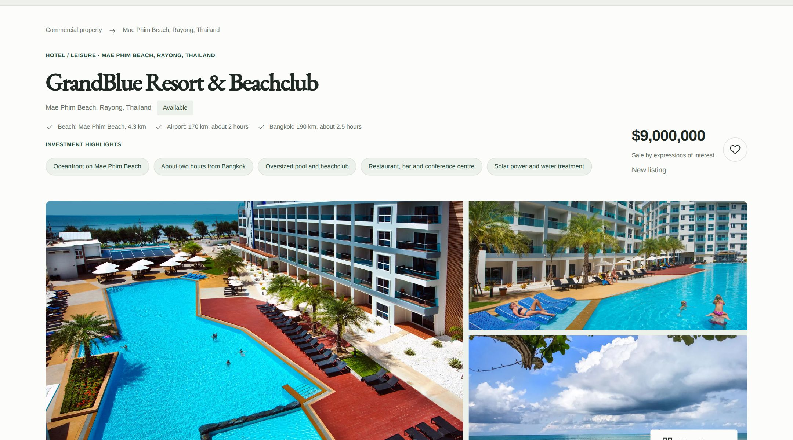
Listing · the one real property, price to be confirmedConfirmed
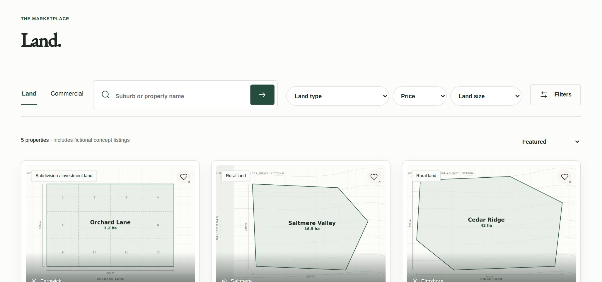
Search · filters live in the address barConfirmed
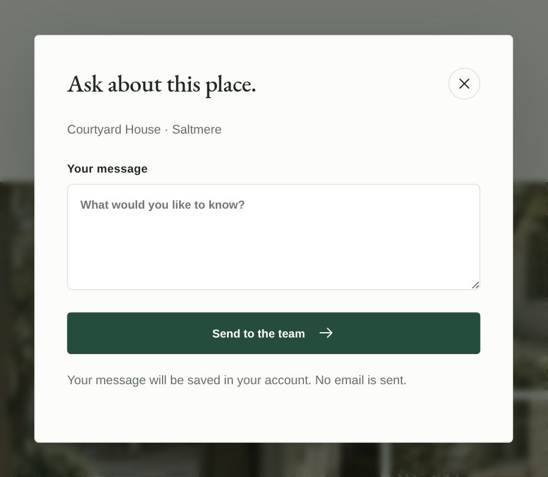
Enquiry · the limitation stated in the formConfirmed
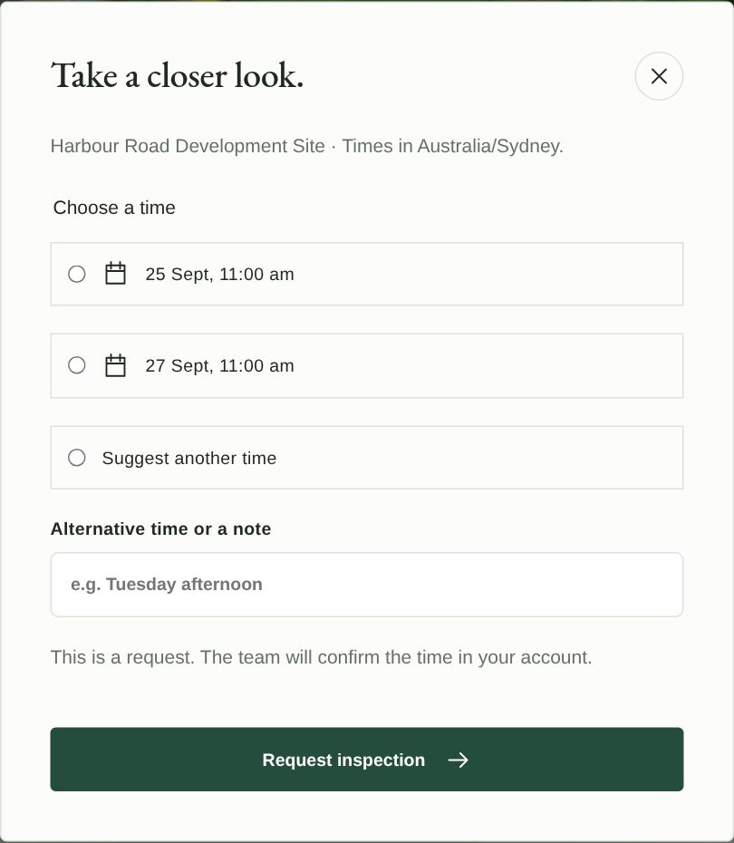
Inspection · a request, confirmed by the teamConfirmed
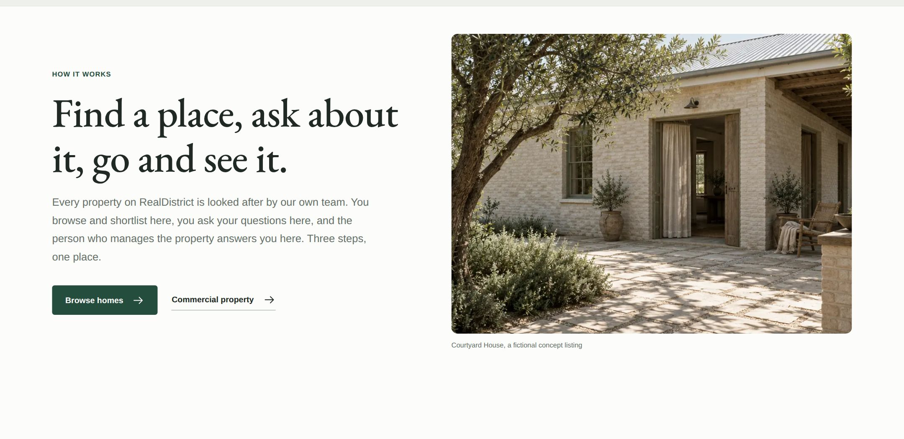
How it works · written to the customerConfirmed
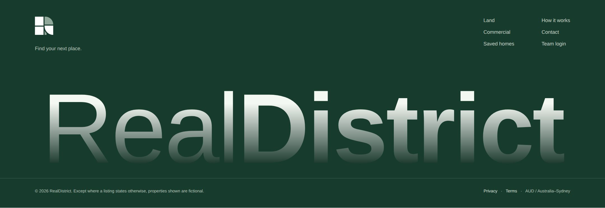
Footer · mark, then the name at the measureConfirmed
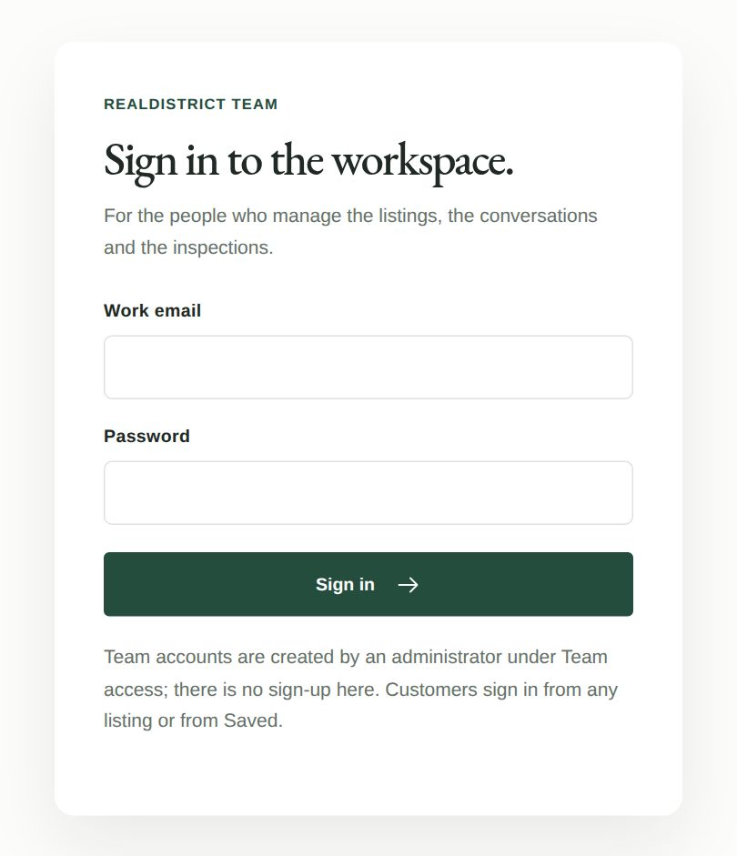
Team login · no sign-upConfirmed
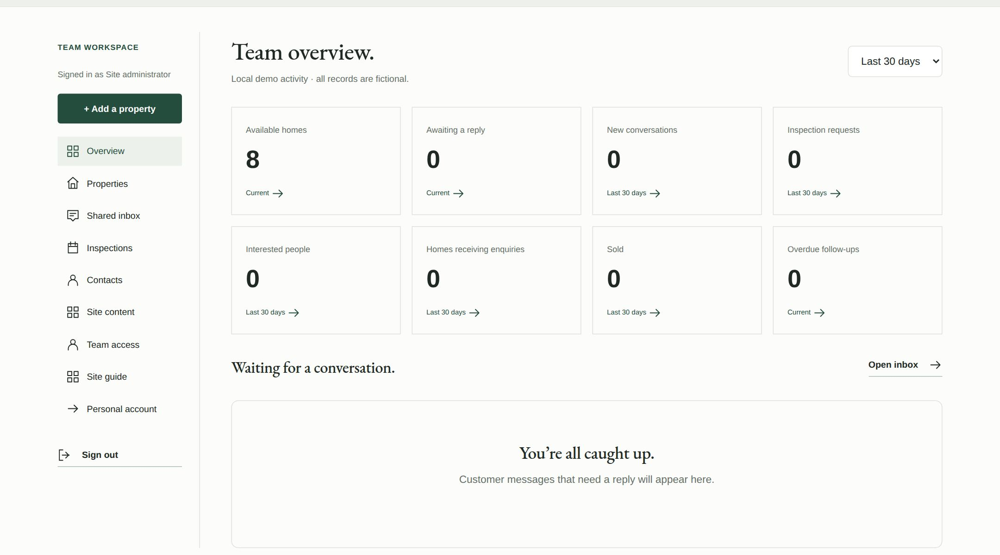
Workspace · the counts are named preciselyConfirmed
Physical and social
No business card, signboard, letterhead, email signature or social template exists. When one is needed, it takes the header lock-up on paper, the tile on dark stock, and the same labels as the site: a printed listing sheet says to be confirmed where the site does. To be confirmed
10 Supporting system
The quieter half
Five elements do most of the work between the mark and the words: labels, tags, buttons, cards and motion. All are in public/styles.css and public/experience.css.
Element
Standard
Status
Labels
Uppercase eyebrows at 11px, 7% tracking, 600, olive. The demo strip under the header on every page: “Includes fictional concept listings with generated imagery”.
Confirmed
Tags
Small bordered tags on paper: property type, Fictional, Featured; status badges Under offer, Sold, Withdrawn in words, never colour alone.
Confirmed
Buttons
Primary: olive ground, white text, 4px radius, 46px minimum height, an arrow icon that moves 3px on hover. Secondary: hairline border, ink text, pale on hover. Focus: 3px clay ring, 4px offset.
Confirmed
Cards and radii
Cards on white with a hairline or a soft shadow; radius 10px (14px for the large step and question cards), 6px for controls. Section rules were removed page by page in September (D036, D045): spacing separates, lines do not.
Confirmed
Icons
Inline SVG line icons, 24-unit grid, 1.5 stroke, round caps and joins, currentColor. Drawn in app.js; no icon font, no third-party set.
Confirmed
Motion
Transform and opacity only; every animation is off under prefers-reduced-motion. Reveals rise 14px over 0.5s; the stacked step cards scale to 95% and veil as the next covers them (docs/49); the hero crossfades three photographs and shows only the first under reduced motion (docs/22).
Confirmed
Photograph frames
Listing and step screenshots sit in 10px-radius frames with a hairline; the How it works opener keeps its 4:3.
Confirmed
11 Layout & grid
One measure, one rhythm
A single content measure, generous gutters, and a small set of breakpoints measured rather than assumed.
Rule
Value
Where
Measure
1370px maximum, so 1274px of content at 48px gutters
.wrap, experience.css
Gutters
48px; 35px at 1150px and below; 24px at 800px; 20px at 560px
.wrap media queries
Breakpoints
1150, 800, 560, 420, 375 and 359px. The last three exist for the header alone (docs/42): the account button drops its icon at 420, the wordmark steps at 420 and 375, the sector links give way at 359.
experience.css
Section rhythm
38px above and 46px below on informational pages; 65/74px on the homepage sections
.how-section, .section
Radius scale
4px buttons, 6px controls, 10px cards, 14px large cards, 22 units on the icon tile
The name is sized from the measure: (viewport − gutters) ÷ 5.4, capped at 236px, centred, 97.5% fill so a scrollbar cannot push it past the edge (docs/53)
.footer-sign
Workspace
205px sidebar and a fluid body at 45px gap; sidebar becomes a row of links at 800px
.workspace
The stacked step cards on How it works are sticky only where a whole card fits, 801px wide and 700px tall; elsewhere they sit in a column so nothing is hidden under the fold (docs/49). Confirmed
12 Guardrails
What must never be shown or said
These are the rules Clent set at the handover (docs/23) and the product invariants in AGENTS.md. They are enforced in code where code can enforce them, and they hold for every surface, printed or on screen.
The labels — confirmed, verbatim
Fictional listing · Generated image
Photographs supplied by the property. Price to be confirmed.
The first on every fictional card and page; the second on GrandBlue. Alt text ends “Generated concept image.” or “Photograph supplied by the property.” The header strip on every page: “Includes fictional concept listings with generated imagery”. Confirmed
Rule
What it means in practice
Enforced
Never invent a price, room count or area
A missing figure is stated as to be confirmed. GrandBlue’s price, room count, land and floor area and sale terms are all to be confirmed with the property.
Copy and validation: a listing without a price must carry a price label (tests)
Fictional is labelled
Demo records and generated imagery are labelled fictional wherever they appear.
Card, page, alt text, header strip, terms page
Closed is not sold
A closed enquiry is never evidence of a completed transaction; publication state and transaction status are independent.
Data model and tests
Metrics count the entity
Numbers count people, property threads and homes, never interchangeable messages.
docs/08 and the dashboard tests
Private notes stay private
Internal notes are separate records and never reach customer responses, notifications or exports.
API and tests
No third-party scripts, styles or fonts
Content Security Policy: self only; Google Maps frames are the one exception, loaded on request.
Server headers; this document obeys the same rule
Motion is transform and opacity
And everything works under reduced motion.
CSS and the route walk
British English, one palette, no luxury language
Every string, including this document.
Review
Permission for photographs
GrandBlue’s photographs are used with the client’s authority as listing owner; written confirmation is to be filed before launch.
Open item B-04 — To be confirmed
For counsel, not design. Nothing here is legal advice. Consumer-law obligations for property advertising in the launch region, the trading entity’s disclosures, and the terms and privacy policy for a public launch are all open (docs/02, D007, D013). The privacy and terms pages say so on the site.
A Appendix — confirmed assets
Where each asset lives
Every confirmed item in this document traces to a file in the repository clentjewell/porli.
Asset
Path
Note
Mark, source
design/realdistrict-mark.svg
Olive and pale on transparent; the brand site publishes a copy
Tile / favicon
public/favicon.svg
Served as /favicon.svg?v=2; the query busts browser caches
Twelve sourced photographs, 1536 × 1032 WebP, credits in the register and in section 07
Brand specification
docs/03-brand-and-design.md
With the historical proposal palette
Decision log
docs/12-decision-log.md
D033 name, D039 mark, D040 wordmark, D049 this site
Change records
docs/38, 42–47, 53–54
Rename, mark rounds, wordmark, brand page
This document
brand/public/
Deployed as the Worker realdistrict-brand
B Appendix — to be confirmed
The open register
Every unresolved item in this document in one place. Nothing here is a standard yet. Items B-02 to B-04 are the ones a public launch waits on, and none of them is a design decision.
Ref
Item
What is missing
Priority
B-01
Vision statement
None published or recorded. Section 01 shows the gap.
Medium
B-02
Brand availability
RealDistrict unchecked as company name, domain or trade mark (D009). Gates any public launch.
Highest
B-03
Trading entity and focus
Who trades as RealDistrict, and commercial or residential first (D013). Gates the hero copy and the contact identity.
Highest
B-04
GrandBlue photograph permission
Used with the client’s authority; written confirmation not on file.
Highest
B-05
GrandBlue facts
Price or guide, room count, land and floor area, sale terms, whether the street address stays public.
High
B-06
Live address
porli.clent.workers.dev still carries the working name; no domain attached.
High
B-07
Mark vector original
The source is a trace of supplied raster artwork; replace with the original vector if one exists.
Medium
B-08
docs/03 palette
The brand specification still lists the proposal palette; the live tokens are the standard. Reconcile.
Medium
B-09
Clear space
A quarter of the width, stated not drawn, not signed off.
Medium
B-10
Print and Pantone
No print equivalents; needed before any printed application.
Medium
B-11
Wordmark typeface
The artwork’s geometric face was not adopted (D040); decide whether to license and self-host it.
Low
B-12
Physical and social applications
None exist: card, signboard, letterhead, email signature, social templates.
Low
B-13
Photography
No photography commissioned; generated imagery paused (credits exhausted). Twelve openly licensed Thai photographs are in section 07 for destination and mood use, proposed and awaiting sign-off (docs/57).
Medium
B-14
Revenue model and launch region
No revenue model approved; country, currency and region not settled (D007, docs/02).
Counsel and business
B-15
Two copies of the styles
The site’s tokens and this document’s stylesheet are kept in step by hand (docs/54).
Low
One mark, one name, one team to talk to.
Questions about this document go to Jewell Projects. Decisions in the open register are Clent’s.
{kind=link}
{kind=link}
{kind=link}
{kind=link}
{kind=link}
{kind=link}
.jpg){kind=link}
.jpg){kind=link}
.jpg){kind=link}
{kind=link}
.jpg){kind=link}
.jpg){kind=link}
{kind=link}
{kind=link}